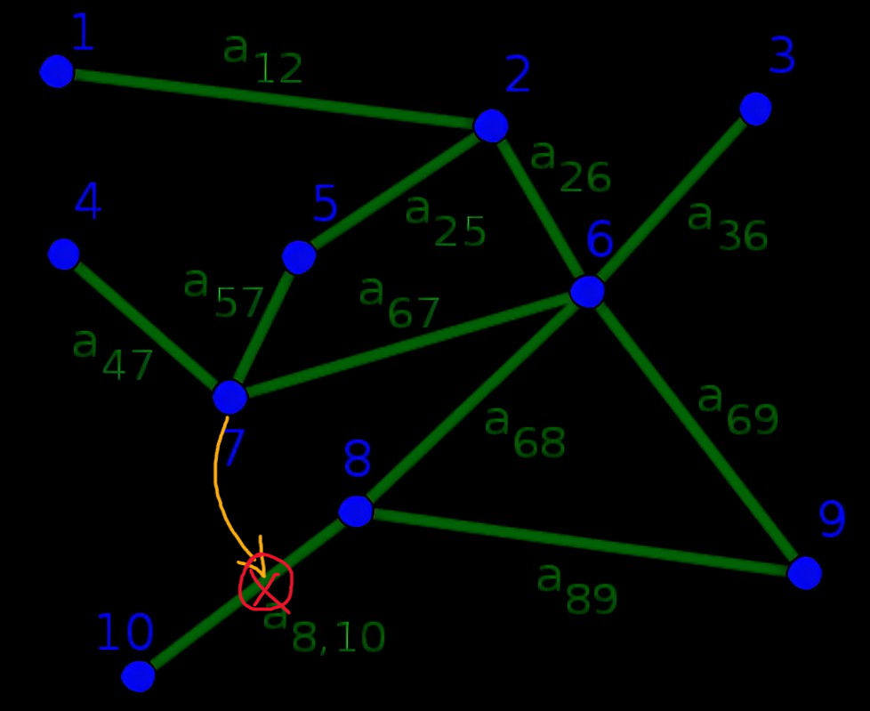

Image collected from tumblr.
Often we ask our close ones about something bad we hear about them from someone outside. In most cases it make them sad sometimes make them rude as well, and you might get replies from them like, "How could you think like that of me?", "Do you believe I did that?" and so on. But it's actually quite important to ask them about this confusion and the source of information. Because when a third party inject something about our loved ones inside us, it remains inside us even if we don't care at first place. Suppose someone told you something about your spouse, your initial react can be, "I don't believe he/she did this". Or in worst case, you will burst at that place, and try to take your spouse into remand, which will escalate the situation to worse. Or it can happen like this, you shoot your spouse about the thing you heard and after asking your partner and the bullet just ricochet back to you.
Nothing from the above is healthy as you are just sowing a cancer seed inside you and today or tomorrow or 5 years later it will burst out in any silly incident that might hamper your relationship with the person. That is the reason asking for clarification and clarifying doubt is so so important that we fail to do in regular basis, thus we lost the trust of our precious people by letting a third person entering in our lives.
In graphs each node (person) have an edge (bond) with every person, and it always remains 1 to 1 connection whether it's strong or weak. You may not know all the students of your class, still with each of them you have a separate invisible connection that you must not pollute with a share or perspective of another.
{kind=link}